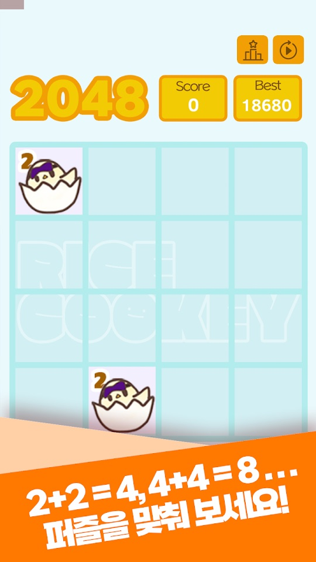
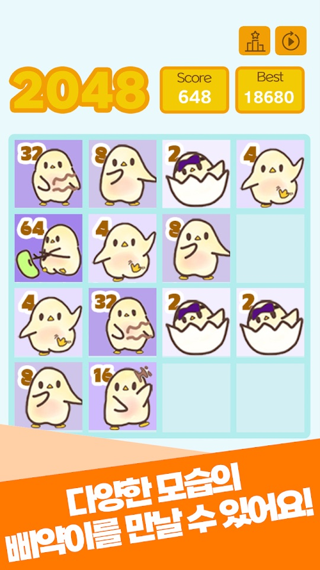
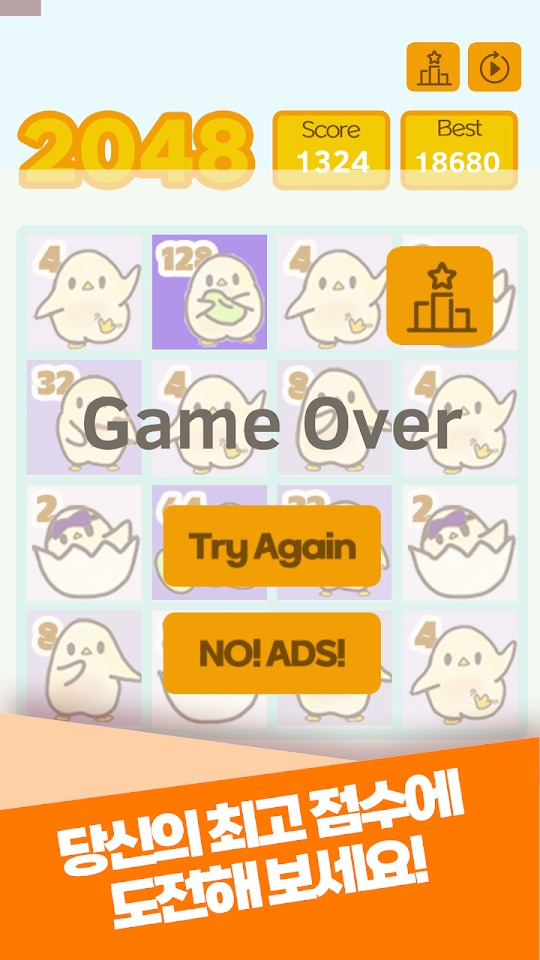
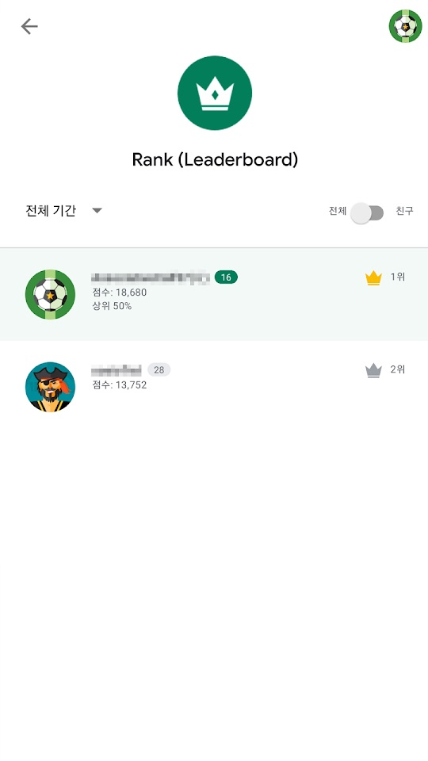

같은 모습의 삐약이를 합쳐 2+2=4, 4+4=8처럼 숫자를 키워 가는 2048 퍼즐입니다. 숫자가 커질수록 알에서 깨어난 삐약이가 조금씩 자라는 모습을 볼 수 있습니다.
게임의 기본 흐름
- 보드에 2가 적힌 알 속 삐약이 타일이 나옵니다.
- 똑같은 삐약이(같은 숫자) 두 개를 연결하면 하나로 합쳐지며 숫자가 두 배가 됩니다.
- 숫자가 커질수록 삐약이의 모습이 바뀝니다. 스토어 설명은 처음 먹어 보는 콩부터 어떤 어른이 되고 싶어 하는지까지 함께 볼 수 있다고 소개합니다.
- 판이 끝나면 Game Over 화면 위쪽에 이번 Score와 Best(최고 점수)가 표시됩니다.
조작과 화면
- 보드 크기: 2026년 7월 업데이트로 시작 화면에서 보드 크기를 고를 수 있고, 5×5와 6×6 보드가 새로 생겼습니다. 최고 점수는 모드별로 따로 저장됩니다.
- 점수판: 보드 위에 Score와 Best가 있고, 오른쪽 위에 랭킹 아이콘과 다시 시작 아이콘이 있습니다(스크린샷 기준).
- Game Over 화면: Try Again 버튼으로 바로 다시 시작합니다.
- 랭킹: 닉네임을 정하면 모드별 순위표에 최고 점수가 올라가고, 내 순위와 상위 몇 %인지 볼 수 있습니다.
- 스토어 설명에는 타일을 움직이는 구체적인 조작 방법이 적혀 있지 않습니다. 게임 안 안내를 따라 주세요.
처음 시작하기
- 아래 스토어 링크에서 설치합니다.
- 시작 화면에서 보드 크기를 고릅니다. 처음이라면 칸이 적은 보드부터 해 보세요.
- 같은 숫자의 삐약이를 합쳐 4, 8, 16으로 키우며 모습이 바뀌는 것을 확인합니다.
- Game Over가 되면 Try Again으로 다시 도전합니다.
- 순위에 도전하고 싶다면 닉네임을 정해 모드별 랭킹에 점수를 올립니다.
초보자를 위한 참고 팁
아래는 일반적인 2048 퍼즐 요령을 바탕으로 한 제안입니다. 게임의 세부 규칙은 게임 안 표시가 기준입니다.
- 큰 숫자를 한 구석에 모으세요. 가장 큰 삐약이를 한 모서리에 두고 그 주변으로 숫자를 쌓으면 합치기가 쉬워집니다.
- 보드를 너무 채우지 마세요. 빈 칸이 줄면 새 타일이 나올 자리가 줄어 금방 막힙니다.
- 큰 보드는 길게 보세요. 5×5와 6×6은 칸이 많아 더 오래, 더 높은 점수까지 노릴 수 있다고 업데이트 내용에 적혀 있습니다.
- 모드별 기록을 따로 보세요. 최고 점수와 순위가 보드 크기별로 나뉘므로, 익숙한 보드에서 기록을 먼저 다져 보세요.
스크린샷
Google Play 한국 스토어에 게시된 공식 홍보용 스크린샷입니다(일부 홍보 문구 포함). 4×4 보드만 보이며, 2026년 7월 업데이트 이전 화면일 수 있습니다.




자주 묻는 질문
- 광고가 나오나요?
- Google Play에 광고 포함으로 표시되어 있습니다. 2026년 7월 업데이트로 매 판마다 나오던 전면 광고가 여러 판에 한 번으로 줄었습니다.
- 5×5나 6×6 보드가 안 보여요.
- 2026년 7월 28일 업데이트에서 추가되었습니다. 앱을 최신 버전으로 업데이트한 뒤 시작 화면을 확인해 주세요.
- 최고 점수가 사라졌어요.
- 업데이트 이후 최고 점수는 보드 크기(모드)별로 따로 저장됩니다. 다른 보드를 골랐는지 확인해 보세요.
- 원스토어 버전도 같은가요?
- 원스토어 페이지는 제목과 짧은 소개만 확인했고, 버전과 업데이트 내용은 확인하지 못했습니다. 원스토어 판에는 위 기능이 없을 수 있습니다.
- 버그는 어떻게 알리나요?
- 화면 캡처를 ricecookey.help@gmail.com으로 보내 주세요. 기기 모델과 앱 버전을 함께 적어 주시면 확인이 빠릅니다.
스토어 링크
게임 스토어
Google Play 표시: 광고 포함, 2026년 7월 28일 업데이트. 원스토어의 판매 조건은 이 페이지에서 확인하지 못했습니다.
문의
질문, 요청, 버그 제보: ricecookey.help@gmail.com
참고 자료와 확인 범위
- Google Play 페이지 — 2026년 7월 28일 업데이트, 설명·업데이트 내용·스크린샷
- 원스토어 페이지 — 제목과 짧은 소개만 확인
규칙과 화면 이름은 2026년 10월 20일에 확인한 스토어 설명, 업데이트 내용, 공식 스크린샷을 따랐습니다. 업데이트로 달라질 수 있으며, 게임 안의 표시가 이 페이지보다 우선합니다.
English
Beep!2048 is a 2048 puzzle with chicks: join matching chicks so the numbers grow, 2+2=4, 4+4=8 and so on. As the numbers rise, the chick that hatched from its egg grows up little by little.
How it works
- Tiles of a chick in its egg, marked 2, appear on the board.
- Connect two identical chicks (the same number) and they merge into one with double the number.
- The chick's look changes as the number grows. The store description promises everything from the first bean it eats to what kind of grown-up it wants to be.
- When a run ends, the Game Over screen shows this run's Score and your Best at the top.
Controls and screens
- Board size: the July 2026 update added a start screen for choosing the board size, with new 5×5 and 6×6 boards. Best scores are saved separately for each mode.
- Scoreboard: Score and Best sit above the board, with ranking and restart icons at the top right (based on the screenshots).
- Game Over screen: Try Again restarts right away.
- Ranking: set a nickname to post your best score to the per-mode leaderboard and see your rank and top percentage.
- The store description doesn't spell out how to move tiles; follow the in-game instructions.
Getting started
- Install from the store links below.
- Choose a board size on the start screen. If you are new, start with the smallest board.
- Merge matching chicks into 4, 8 and 16 and watch their look change.
- At Game Over, tap Try Again to go again.
- To compete, set a nickname and post your score to the per-mode ranking.
Beginner tips
These suggestions come from general 2048 strategy. The game's own display is the reference for detailed rules.
- Keep the biggest number in a corner. Building around your largest chick in one corner makes merges easier.
- Don't fill the board. Fewer empty cells mean fewer places for new tiles, and you get stuck quickly.
- Play big boards for the long game. The update notes say 5×5 and 6×6 let you play longer and aim for higher scores.
- Track records per mode. Best scores and ranks are split by board size, so build your record on the board you know first.
Screenshots
Official promotional screenshots from the Korean Google Play listing (some with marketing captions in Korean). They show only the 4×4 board and may predate the July 2026 update.
FAQ
- Are there ads?
- Google Play labels it Contains ads. The July 2026 update cut interstitial ads from every game to once every few games.
- I don't see the 5×5 or 6×6 board.
- They were added in the July 28, 2026 update. Update the app and check the start screen.
- My best score disappeared.
- Since the update, best scores are saved per board size (mode). Check whether you picked a different board.
- Is the ONE Store version the same?
- For ONE Store we only checked the title and short intro, not its version or update contents. The ONE Store build may not have the features above.
- How do I report a bug?
- Send a screenshot to ricecookey.help@gmail.com. Including your device model and app version speeds things up.
Store links
Game stores
Google Play shows Contains ads, updated July 28, 2026. ONE Store terms were not checked for this page.
Contact
Questions, requests and bug reports: ricecookey.help@gmail.com
References and scope
- Google Play listing — updated July 28, 2026; description, release notes and screenshots
- ONE Store listing — title and short intro only
Rules and screen names follow the store description, release notes and official screenshots checked on October 20, 2026. Updates may change them, and what the game shows takes precedence over this page.